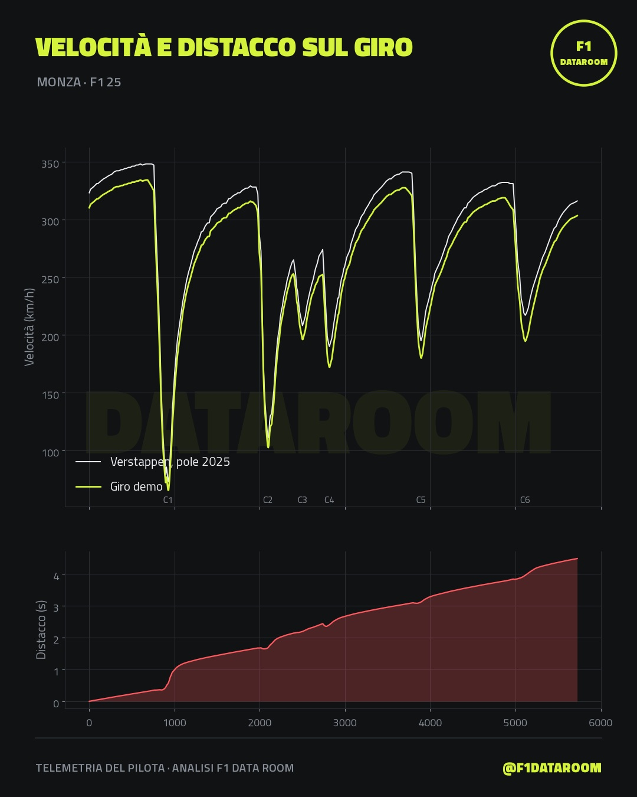
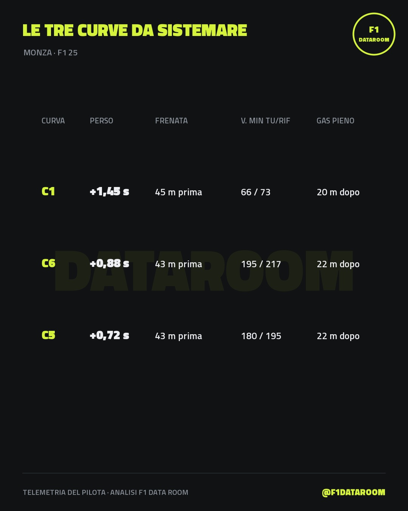

Dove perdi tempo, curva per curva
Mandaci un tuo giro e un giro di riferimento. Ti rimandiamo grafici, un Reel e un debrief scritto: in quale curva perdi più tempo, quanti metri prima freni, che velocità minima porti, quando torni sul gas. E cosa provare al prossimo stint.
Funziona con Assetto Corsa Competizione (export MoTeC) e con EA SPORTS F1 23/24/25. Con il gioco F1 puoi sfidare un giro vero: per esempio la pole di Monza 2025.
Esempio: un giro a Monza contro Verstappen
Il riferimento è il giro vero di Verstappen in qualifica a Monza 2025, dalla telemetria pubblica OpenF1. Il giro "demo" è costruito da noi per l'esempio: frena prima e passa più lento in ogni curva.


Prezzi
Prezzo di lancio: 5 € per i primi 10 debrief. Con il tuo permesso pubblichiamo il confronto (senza il tuo nome, se preferisci).
Ordina in DM su InstagramScrivici "debrief", il gioco, la pista e la macchina. Il file del giro lo mandi come link (Google Drive, Dropbox o OneDrive, condiviso con "chiunque abbia il link"). Ti rispondiamo con come pagare e di solito il debrief arriva entro 24 ore.
Come registrare il giro
EA SPORTS F1 23 / 24 / 25
- Nel gioco: Impostazioni → Telemetria → Telemetria UDP: On, porta
20777, frequenza 60 Hz, IP127.0.0.1(o l'IP del PC se giochi su console). - Scarica f1_game_recorder.py e avvialo con Python 3:
python f1_game_recorder.py. Non serve altro. - Guida. Ogni giro completo viene salvato nella cartella
laps. Caricalo su Google Drive o Dropbox e mandaci il link.
Assetto Corsa Competizione
- Attiva il logging MoTeC di ACC e apri il giro in MoTeC i2.
- File → Export → CSV, con Time, Distance, Speed, Throttle Pos e Brake Pos.
- Mandaci il link al tuo giro e a quello di riferimento (un compagno più veloce, o un giro alieno).